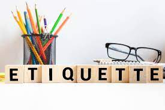

Why Is Etiquette Important?
March 31, 2020 by Staff Writer
Etiquette is important because it implies polite behavior and helps to build relationships with people whether
it is in the workplace or at a party. Etiquette is one way to show respect for other people and to request respect from
other people.

When a person lets go of proper etiquette they often offend other people around them and can lose their job or lose a
friendship. Etiquette differs around the world and changes from culture to culture. It can even change slightly from
city to city within one country.
There are also rules of etiquette when it comes to issues such as plagiarism,
copyright infringement, online auctions, graffiti and hacking.
Etiquette includes an ethical view. It requires people to understand how their actions can affect others and to take responsibility for their actions. One place where etiquette is always necessary is the workplace. Good office etiquette behavior can help a person find success in their field. To practice good office etiquette, a person needs to get to the workplace and all of their scheduled meetings on time. It is disrespectful to other people's time when a person is consistently late. It is also important for people in the workplace to maintain a professional appearance and to use manners as well as their indoor voices when at work for proper etiquette.